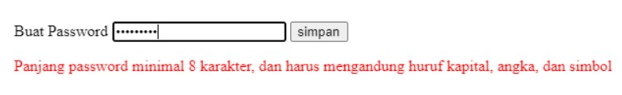

Syahril Saputra
Aplikasi Pemanfaatan REGEX
Pendahuluan
Sebagai seorang system administrators, developers, QA engineers, atau support engineers kita sering kali perlu mencari data dengan pola tertentu misalnya sekelompok IP addresses dalam kisaran tertentu atau terkadang kita juga perlu mencari kata yang salah tulis. Untuk kasus-kasus seperti ini, regular expression dapat membantu.
Regular expressions adalah template untuk data berdasarkan pola tertentu. Tutorial ini akan mendemonstrasikan kemampuan regular expression tanpa bergantung pada bahasa pemrograman tertentu dengan menggunakan egrep untuk menjelaskan konsepnya.
Pemanfaatan REGEX
Pemanfaatan REGEX untuk validasi data
Pertama-tama, kita harus mendefinisikan pola regex untuk data yang valid. Kemudian, kita lakukan pencocokan dengan pola tersebut.
Kode HTML :
Perhatikan atribut pattern, atribut ini digunakan untuk menyimpan pola regex. Pada contoh di atas, polanya adalah pengecekan karakter yang diinputkan pada password.
Berikut hasilnya :
Tentang Saya